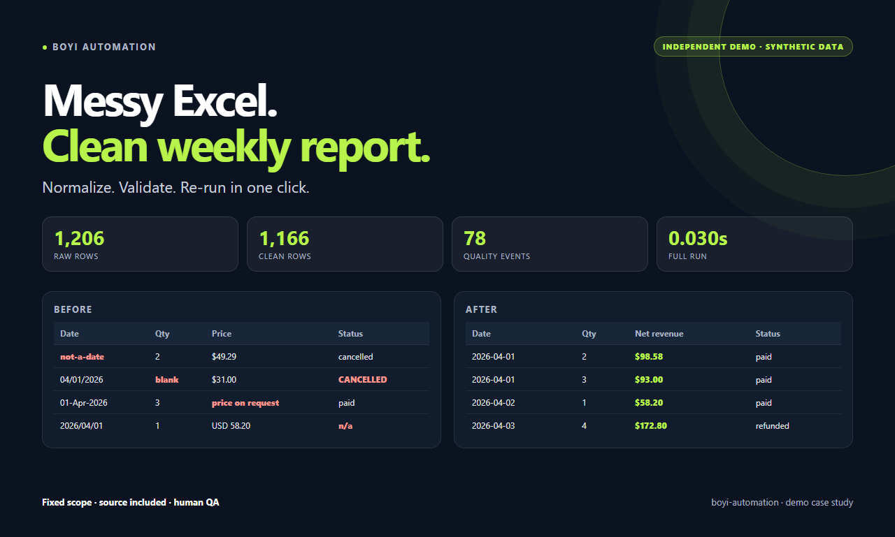
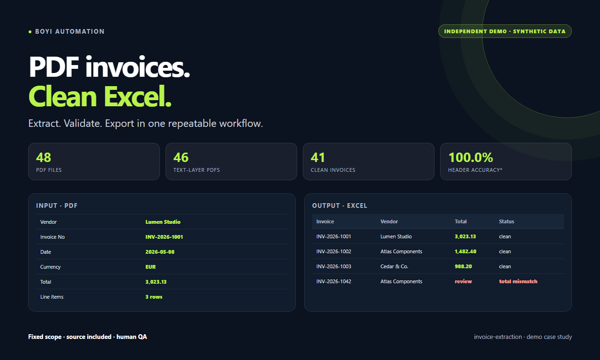
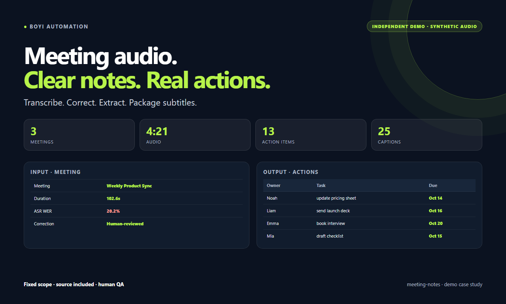
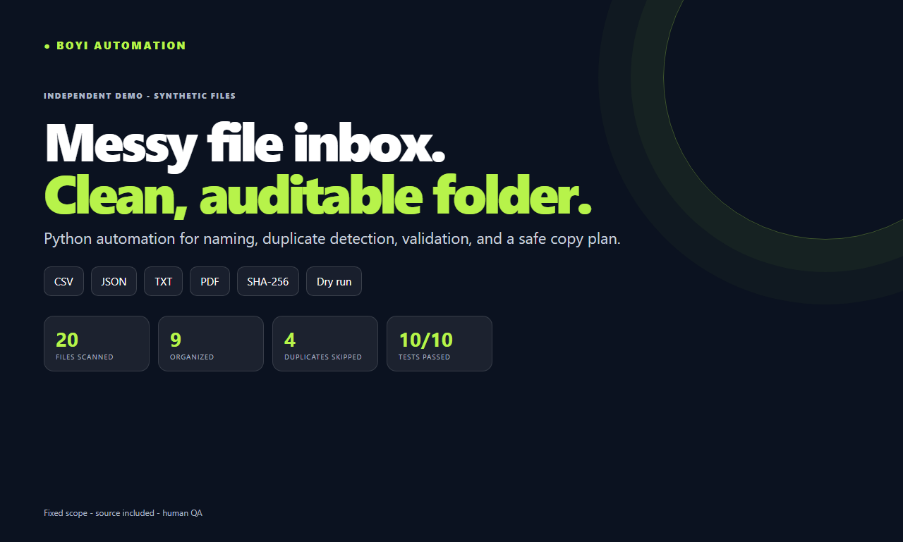

Excel → weekly report
Clean, validate, deduplicate, and package a repeatable workbook.
AI-assisted automation for messy data, documents, and meeting notes. Fixed scope, tested outputs, source included.
Independent demos. Synthetic data and audio only. No client names, logos, testimonials, or revenue claims.
01 · The work

Clean, validate, deduplicate, and package a repeatable workbook.

Header fields, line items, math checks, exception log.

Summary, actions, decisions, risks, bilingual subtitles.

Scan, deduplicate, validate, normalize, and plan safe copies.
Controlled benchmarks on synthetic demo data. See each case for assumptions and limits.
02 · Services
| Service | Fiverr from | Contra from | Output |
|---|---|---|---|
| Spreadsheet cleanup & reporting | $45 | $120 | Workbook, dashboard, exception log, script |
| PDF invoice → Excel/CSV | $65 | $150 | Invoice/line-item tables, math checks, exception log |
| Meeting notes & action items | $65 | $150 | Reviewed notes, actions, SRT (not certified) |
| Python file & folder automation | $75 | $250 | Manifest, exceptions, safe copy plan, normalized names, script |
One representative file or recording before a quote.
Deliverables, assumptions, revisions, exclusions.
Automation does the heavy lifting; I review the output.
Working files, source, exception/test report.
03 · Profile
I build small automations that turn messy business inputs into clean, usable outputs. My current focus is spreadsheet reporting, PDF data extraction, meeting-to-action workflows, and file-folder automation.
I use AI-assisted tooling to build quickly, then personally review and test every deliverable against real sample data. You get the working files, source code, and an audit trail — not a black box.
Excel, PDF invoices, meeting audio, and file folders.
6 + 8 + 6 + 10 across the demos.
Repeatable scripts and README files.
No off-platform payment or contact. Use the platform where we connected. Independent demos. Synthetic data and audio only.